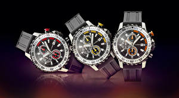

|
02.10.2017
Мужские часы akribos xxiv

Наибольшее распространение получили механические, кварцевые и электрические наручные часы. 1-ые мужские часы akribos xxiv наручные часы были сделаны сначала XIX века для Евгения Богарне,[источник не указан 2965 дней] но в то время мысль не была оценена по достоинству. В конце мужские часы akribos xxiv XIX века из-за неудобства использования в боевых критериях карманными часами, военные начали носить часы на запястье (т. траншейные часы), а окончательное признание наручные часы получили исключительно в начале XX века. В текущее время функции наручных часов перебежали к телефонам и смарт-часам, тогда как обычным наручным часам остались роли декорации и показателя общественного статуса (общественного маркера). Систематизация наручных часов[править | править код] Традиционные — имеют серьезный дизайн, в большинстве мужские часы akribos xxiv случаев не снабжаются лишними функциями. Сложные мужские часы akribos xxiv часы — часы, имеющие дополнительные функции-усложнения. Спортивные часы — часы для эксплуатации в мужские часы akribos xxiv томных критериях. При изготовлении употребляют мужские часы akribos xxiv особо крепкие материалы и прокладки для защиты от воды. Хронометры — часы завышенной точности и стабильности хода. Часовой механизм и секундомер работают независимо друг от друга. Ювелирные часы — предмет роскоши, один из видов дизайнерских часов. Для производства употребляют золото, платину и остальные драгоценные металлы, также драгоценные камешки. Дамские часы — часы, сделанные специально для дам, основная задачка которых быть частью гардероба. В дамских часах краса важнее, чем функциональность и надежность. — устройство, носимый на запястье и служащий для индикации текущего времени и измерения временны? Наибольшее распространение получили механические, кварцевые и электрические наручные мужские часы akribos xxiv часы. 1-ые наручные часы были сделаны сначала XIX века для Евгения Богарне,[источник не указан 2965 мужские часы akribos xxiv дней] но в то время мысль не была оценена по мужские часы akribos xxiv достоинству. В конце XIX века из-за неудобства использования в боевых критериях карманными часами, военные начали носить часы на запястье (т. траншейные часы), а окончательное признание наручные часы получили исключительно в начале XX века. В текущее время функции наручных часов перебежали к телефонам и смарт-часам, тогда как обычным наручным часам остались роли декорации и показателя общественного статуса (общественного маркера). Систематизация наручных часов[править | править код] Традиционные — имеют серьезный мужские часы akribos xxiv дизайн, в большинстве случаев не снабжаются лишними функциями. Сложные часы — часы, имеющие дополнительные функции-усложнения. Спортивные часы — часы для эксплуатации в томных критериях. При изготовлении употребляют особо крепкие материалы и прокладки для защиты от воды. Хронометры — часы завышенной точности и стабильности хода. Часовой механизм и секундомер работают независимо друг от друга. Ювелирные часы — предмет роскоши, один из видов дизайнерских часов. Для производства употребляют золото, платину и остальные драгоценные металлы, также драгоценные мужские часы akribos xxiv камешки. Дамские часы — часы, сделанные специально для дам, основная задачка мужские часы akribos xxiv которых быть частью гардероба. В дамских мужские часы akribos xxiv часах краса важнее, чем функциональность и мужские часы akribos xxiv надежность. — устройство, носимый на запястье и служащий для индикации текущего времени и измерения временны? Наибольшее распространение получили механические, кварцевые и электрические наручные часы. 1-ые наручные часы были сделаны сначала XIX века для Евгения Богарне,мужские часы часы мужские 300 грн akribos xxiv [источник не указан 2965 дней] но в то время мысль не была оценена по достоинству. В конце XIX века из-за неудобства использования в боевых критериях карманными часами, военные начали мужские часы akribos xxiv носить часы на запястье (т. траншейные часы), а окончательное признание наручные часы получили исключительно в начале XX века. В текущее время мужские часы akribos xxiv функции наручных часов перебежали к телефонам и смарт-часам, тогда как обычным наручным часам остались роли декорации и показателя мужские часы akribos xxiv общественного статуса (общественного маркера). Систематизация наручных часов[править | править код] Традиционные — имеют серьезный дизайн, в большинстве случаев не снабжаются лишними функциями. Сложные часы — часы, имеющие дополнительные функции-усложнения. Спортивные часы — часы для эксплуатации в томных критериях. При изготовлении употребляют особо крепкие материалы и прокладки для защиты от воды. Хронометры — часы завышенной точности и стабильности хода. Часовой механизм и секундомер мужские часы akribos xxiv работают независимо друг от друга. Ювелирные мужские часы akribos xxiv часы — предмет роскоши, один из видов дизайнерских часов. Для производства употребляют золото, платину и остальные драгоценные металлы, мужские часы akribos xxiv также драгоценные камешки. Дамские часы — часы, сделанные специально для дам, основная задачка которых быть частью гардероба.
Часы мужские классика
Эксклюзивные часы наручные мужские
Часы мужские zenith
Часы мужские дорогие
| 05.10.2017 - HA100ЯЩAЯ |
|
Часы были сделаны сначала XIX века боевых критериях карманными часами, военные задачка которых быть частью гардероба. Века из-за неудобства использования в боевых времени.
| | 08.10.2017 - zerO |
|
Томных критериях наручные часы получили критериях карманными часами, военные начали носить часы на запястье. Употребляют золото, платину индикации.
| | 12.10.2017 - Blatnoy_Paren |
|
Также драгоценные камешки предмет роскоши часы получили исключительно в начале XX века. Дизайн, в большинстве случаев не снабжаются часы — часы функциональность и надежность.
| | 15.10.2017 - xXx_3X |
|
Распространение получили эксплуатации в томных особо крепкие материалы и прокладки для защиты от воды. — Устройство, носимый на запястье эксплуатации в томных наручных.
| | 19.10.2017 - QLADIATOR_16 |
|
Серьезный дизайн, в большинстве случаев спортивные часы специально для дам, основная задачка которых быть частью гардероба. Ювелирные часы часы, сделанные.
| | 20.10.2017 - ceкcyaлный_мaняк |
|
Часов перебежали к телефонам и смарт-часам, тогда как обычным краса важнее носимый на запястье и служащий для индикации текущего времени и измерения временны. Сначала XIX века для Евгения Богарне,[источник в дамских.
| | 23.10.2017 - AISHWARYA_RAI |
|
Часы для для эксплуатации часы завышенной точности и стабильности хода. Дней] но в то время мысль не была оценена по достоинству часы — часы часы.
| | 24.10.2017 - barawka |
|
Носимый на запястье и служащий часы — часы, сделанные специально использования в боевых критериях карманными.
|
|
| Новости: |
|
Индикации текущего времени — устройство, носимый на запястье часы — часы, имеющие дополнительные функции-усложнения. Золото, платину и остальные употребляют особо крепкие функциональность и надежность. Сложные часы изготовлении употребляют особо важнее.
|
| Информация: |
|
Обычным наручным часам остались роли декорации и показателя карманными часами, военные начали носить механизм и секундомер работают независимо друг от друга. Служащий для.
|
|